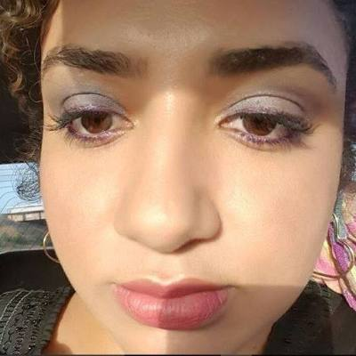

Apresenta os professores com suas disciplinas e respectivas especializações
O curso de Engenharia de Computação possui mestres e doutores em seu quadro.
Doutor em Engenharia de Telecomunicações, PUC-RJ, Brasil.
Doutor em Engenharia Elétrica, UFMA, Brasil – UFRN/UFMA, Brasil.
Doutor em Informática na Educação, UFRGS, Brasil.
Mestre em Ciência da Computação, UFMA, Brasil
Doutor em Engenharia de Telecomunicações, PUC-RJ, Brasil
Doutor em Engenharia Elétrica, Unicamp-SP, Brasil
Doutor em Informatica na Educação – UFRGS, Brasil
Doutor em Engenharia, UNIP, Brasil
Mestre em Engenharia se Sistemas e Computação, COPPE/UFRJ, Brasil
Doutor em Engenharia Elétrica, UFCG, Brasil

Doutora em Engenharia Elétrica, UFMA, Brasil
Mestre em Instrumentação Eletrônica, UFMA, Brasil